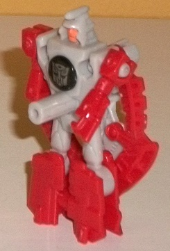
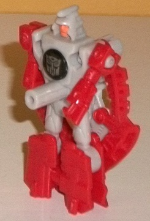
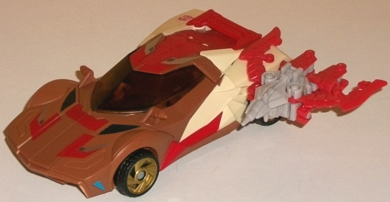
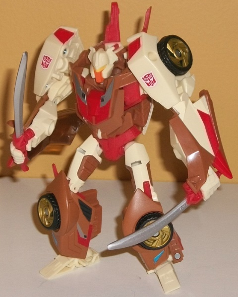

Allegiance : Autobot
Size : Mini-Con
Difficulty of Transformation : Very Easy
Color Scheme: Light red, light pale gray, and some silver, clear tinted plastic, and bright "safety" orange
Individual Rating : 5.7
 Stylor
Stylor

Allegiance
: Autobot
Size
: Mini-Con
Difficulty of Transformation
: Very
Easy
Color Scheme:
Light red, light pale
gray, and some silver, clear tinted plastic, and bright "safety" orange
Individual Rating
: 5.7
Since Chromedome in this
set isn't a Headmaster, what to do about Stylor? Well, making him a Mini-Con
weapon partner is about as good of an idea as I've heard! Like all Club
exclusive toys, Stylor is a redeco, but of a previous Japanese-only "Arms
Micron" (Mini-Con) named "S.2". Thus, I'll be reviewing the mold as if
it's new, since I don't have any other versions of it.
Stylor's weapon mode
(see Chromedome's vehicle mode pic below) is a crossbow with a gun nozzle--
in which case I'm not sure what the point is of the "wings" on the crossbow,
but it's a futuristic weapon, I guess I get it. Unfortunately, it's a futuristic
weapon with most of the robot mode hanging out on the bottom/behind the
back of the crossbow, which doesn't look too hot and is my chief complaint
about the figure-- it's a pretty large thing to ignore. Stylor's mold detailing
is quite impressive on parts of his weapon mode, though, with the wings
and gun nozzle having little bits of angular and semi-mechanical detailing
all over the place. As far as the color scheme, Stylor's light red and
light gray go together pretty well-- though that's basically it as far
as his color scheme, particularly in this mode. No other colors show up
here at all. Stylor has a standard 3mm peg underneath the center-bottom
of this mode, though he also has a 3mm peg on his rear right side and a
3mm hole on his rear left side so you can mount him in different ways on
different TFs.
Stylor's robot mode
looks a bit like G1 Devcon in terms of the headsculpt, "wings" on the back,
and general robot mode appearance. His entire crossbow mode is on his back,
but the crossbow sides do work as the earlier-mentioned "wings". He also
has a (relatively) long peg sticking out of his belly button-- an odd place
for a handle, but given the transformation it's pretty much necessary.
His detailing for the robot mode is a bit more simplistic when compared
to some aspects of the crossbow mode, but it's still pretty good, with
little bits like the little fists molded into the ends of the arm pieces
and the knees and such being molded into the plastic. The facesculpt looks
a bit off, though-- the combination of the rather large eyes and slight
frown make him look a little weird. It's here that Stylor has some paint
apps, although they're few-- he has a silver Autobot symbol painted over
a circle of tinted transparent plastic in the middle of his chest, and
his face is painted a rather loud "safety" color of orange. I wish a bit
more orange could've been added to some more robot parts, though the breakup
of the colors isn't too bad given how small Stylor is. Stylor can't move
much-- back and forth at the shoulders and up-and-down at the wings. That's
it, though then again articulation isn't really the point of these small
little Minicons.
 Chromedome
Chromedome


Allegiance
: Autobot
Size
: Deluxe
Difficulty of Transformation
: Medium
Color Scheme
: Light pale tan, moderately
dark brown, red, and some black, silver, clear tinted plastic, and moderately
light blue, moderately light orange, pale metallic gold, and dull yellow
Individual Rating
: 9.6
(NOTE: Because this is a repaint, this is not a full-blown review. This mainly covers any changes made to the mold and the color scheme, and merely compares it to the original Prime "Robots in Disguise" deluxe Wheeljack. For a review on the mold itself, read the review of the original Prime "Robots in Disguise" deluxe Wheeljack figure here .)
Chromedome here-- as
opposed to being a direct or indirect G1 update, like most Club figures
based on G1 characters-- is mostly based on his IDW version, which had
a rather futuristic alt mode, broad shoulders, and a rather skinny waist.
This figure sort of "bridges the gap" between his G1 figure and his IDW
design, hence why I refer to the toy as "Pseudo-IDW". He's got a more realistic
alt mode and certainly isn't a one-to-one interpretation of either version
of the character, but his characterization lends itself much more to his
portrayal in the IDW comics. Regardless, FunPub did an excellent job giving
him a very Chromedome-ish color scheme, with two shades of brown-- a slightly
dark shade and a very light tan shade, nearly a creamy white-- being his
main colors. Both colors complement and contrast against each other very
well, and are well broken-up throughout the figure to keep any one area
from getting too bland. I particularly like the lighter shade-- it just
strikes a nice balance between tan and white, in my view. There's also
a fair amount of red on Chromedome, mostly visible on his robot mode parts
like his knees, waist, and the interior of his shoulders, but also combined
with silver on his swords as well as on some very G1-esque angular details
on the front and hood of his vehicle mode. There's also a titch of black,
not just on the expected wheels but on the "vents" on his front, and his
clear plastic is tinted rather dark to the point where it looks rather
black, particularly in vehicle mode (always a good thing because that means
the robot parts inside the windows aren't obvious). To top things off,
there's a bit of a rather nice shade of blue on the sides of his front
bumper, and some pale gold on the hubs of his wheels, the former of which
provides such a great amount of contrast I wish it was used a little more
and the latter of which complements the browns nicely.
Chromedome does have
a mold change, and that's a new headsculpt, made pretty much exactly like
his IDW head, with a more angular, stylized look to him. He has a nice
bit of orange for his faceplate, but the yellow used for his optic strip
is a bit too close to the tan used on the rest of his head and doesn't
make itself obvious enough. Otherwise it's an excellently done headsculpt.
TFSS Chromedome is an
excellently done, nice remold of one of the best Prime molds out there,
and one that fits his IDW character pretty well, along with a spot-on headsculpt.
That said, since the headsculpt is so "IDW-ish" and he's not a Headmaster,
I'd recommend this Chromedome for fans of his IDW version as opposed to
his G1 version. His accessory/Targetmaster partner Stylor isn't all that
great, but it's a nice little extra in place of a Headmaster, I guess,
and is certainly appreciated over nothing.
Reviews by Beastbot